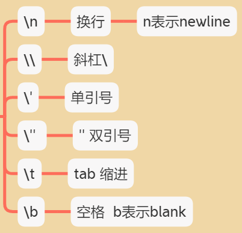

计算机基础
编程语言
我们有 机器语言, 汇编语言, 高级语言
高级语言里面有
- C语言 puts(“你好”);
- C++
- Java
System.out.println"你好"; - C#
- PHP
echo"你好"; - Python
- JavaScript
alert("你好"); - Go语言
- Object-C
- Swifit
计算机组成
数据存储
计算机内部使用0和1来表示数据
数据存储单位
bit<byte<kb<GB<TB
位bit:1bit可以保存一个0或者1(最小的存储单位)
字节(Byte): 1B=8b
千字节kb: 1kb=1023b
兆字节MB: 1MB=1024kb
吉字节GB:1GB=1024MB
太字节TB:1TB=1024GB
`````
程序运行
初识JS
发展历史
最初目的:表单验证
JS引擎逐行执行代码, 所以叫脚本语言
JS的组成
ECMAScript
JavaScript语法
规定了JS编程语法和基础核心知识,时浏览器厂商共同遵守的一套JS语法工业标准
DOM: 文档对象模型
BOM: 浏览器对象模型
JS输入输出语句
alert(msg)
浏览器弹出警示框
归属浏览器
console.log(msg)
浏览器控制台打印输出信息
归属浏览器
prompt(info)
浏览器弹出输入框, 用户可以输入
归属浏览器
变量
概述
装数据的盒子
用于存放数据的容器, 通过变量名获取数据,甚至数据修改
本质: 变量是程序在内存中申请的一块用来存放数据的空间
变量的使用
…
-
变量初始化
var age =18var myname ='Sammy梁'
案例: 用户名的输入与输出
1 | <script> |
变量语法扩展
- 更新变量
一个变量被重新赋值后, 它原有的值就会被覆盖, 变量值将以最后一次赋的值为准.
1 | var myname = 'pink老师' |
-
声明多个变量
只需写一个var 多个变量之间用英文逗号隔开1
2
3var age = 18,
address = '火影村',
salary = 2000; -
声明变量的特殊情况
只声明 不赋值: 显示undefined
不声明 不赋值: 直接使用会报错
不声明 直接赋值: qq =10; 会变成全局变量&&能正常输出
命名规范
- 由下小写字母, 数字,下划线_ 美元符号$ 组成 !不允许用&
- 严格区分大小写
- 不能数字开头
- 不能是关键词, 保留字:var for while
- 变量名必须有意义
- 遵守驼峰命名法:myFirstName
第一个单词小写, 之后每个单词首字母大写
交换变量案例
要求:交换两个变量的值
实现思路: 使用一个临时变量, 用来做中间储存
1 | var a =1; |
数据类型
简介
充分利用空间, 定义不同数据类型
JS的变量数据类型是 只有在程序在运行过程中, 根据等号右边的值来确定的
简单数据类型
Number
-
默认值为0
-
数字型范围
JS中 数值的最大值和最小值
alert (Number.MAX_VALUE);
alert (Number.MIN_VALUE); -
三个特殊值
1
2
3
4
5// 无穷大
console.log(Number.MAX_VALUE * 2);// Infinity
console.log(-Number.MAX_VALUE * 2); // -Infiinity
// 7. 非数字
console.log('pink-100' - 100); // NaN 非数值 -
NaN
非数值 not a number
-
isNaN
这个方法用来判断非数字, 并且返回一个值
1
2
3
4
5
6
7
8
9
10
11
12
13
14
15
16console.log(isNaN(12)); //false
console.log(isNaN('pink老师')); //true
### String
+ 字符串类型, 如"张三", js里面 字符串都带引号
+ 只要加引号的都视为字符串类型的数据
>'123' 是字符串, 不是数值
+ 推荐使用单引号
```javascript
var str = "我是'高富帅'Sammy"
var str= '我是"高富帅"Sammy'
口诀: 外双内单 外单内双
- 字符串的转义符\

- 字符串长度
判断用户输入的字符数量是否符合要求
字符串是由若干字符组成的,这些字符的数量就是字符串的长度. 通过字符串的length属性就可以获取整个字符串的长度
1 | var str = 'my name is Andy' |
- 字符串拼接
多个字符串可以使用 + 进行拼接, 其拼接方式为
字符串+任何类型=拼接后的新字符串
1 | alert('hello' + ' '+ 'World'); //hello world |
- 注意
!!!纯数值相加
!!!字符相连
- 字符串拼接加强 :实现变量代入
1 | var age = 19; |
先写完整 固定的字符串 在插入变量的地方加入一组引号 和两个+ +
引引加加
变量不能添加引号, 因为加引号就会变成字符串
- 案例: 显示输入年龄的警示框
弹出输入框promt, 让用户输入年龄
把用户输入的值用变量保存起来, 把刚才输入的年龄与所要输出的字符串拼接
使用alert语句弹出警示框
1 | <script> |
Boolean
布尔值类型, 如ture, false, 等价于1和0
默认值false
被赋予true与false的变量参与运算时, true算作1, false算作0
1 | var flag = ture; //flag 布尔型 |
Undefined
var a;
声明了变量a但是没有给值, 此时a = undefined
undefined与字符串相加
1 | var sss; |
undefined与数值相加
1 | var sasha; |
Null
1 | console.log (null+'pink'); // nullpink |
检测数据类型
typeof 可以用来检测数据类型
1 | <script> |
prompt取过来的值是 字符型的
1 | var age = prompt('请输入你的年龄:') // 18 |
通过控制台的颜色 可以判断数据类型
蓝色 数字型
黑色 字符型
深蓝色 布尔型
灰色 undefined null
数据类型的转换!!!
使用表单, prompt获取过来的数据默认是字符串类型的, 此时就不能直接简单的进行加法运算, 而需要转换变量的数据类型.
转换为字符串类型
变量.toString()
var num=1; alert ( num.toString() );
String(变量) 强制转换
var num=1; alert(String(num))
加号拼接字符串
! 和字符串拼接的结果都是字符串
var num=1; alert(num+" ");
注意
.toSring()和String( )使用方法不一样
三种方式, 我们更喜欢用第三种加号拼接字符串转换方式, 这一种方式也称之为隐式转换
转换为数字型(重点)
得到整数
1.parseInt(变量)
可以把 字符型的数字转换为数字型 得到的是整数
2
3
4
>console.log(parseInt('3.14'));// parseInt 得到整数 自动切除小数部分 不会进位
>console.log(parseInt('120px')); // 120 会去掉这个px单位
>console.log(parseInt('rem120px')); // NaN
得到小数
2.parseFloat(变量)
可以把字符型的数字转换为数字型 得到的是小数/浮点数
2
3
>console.log(parseFloat('120px')); // 120 会去掉这个px单位
>console.log(parseFloat('rem120px')); // NaN
利用Number(变量)
2
3
console.log(Number(str)); // 123 蓝色
console.log(Number('12')); // 12 蓝色
利用了算术运算 - * / 实现隐式转换 加号不行哦
2
3
>console.log('123' - '120'); // 12 蓝色
>console.log('123' * 1); // 123 蓝色
案例 简单加法器
1 | <script> |
转换为布尔型
Boolean() 函数
空 或者 否定的值会被转换为false, 如’ ', 0, NaN, null, undefined
其余的值都会转换为true
2
3
4
5
6
7
>console.log(Boolean(0)); // false
>console.log(Boolean(NaN)); // false
>console.log(Boolean(null)); // false
>console.log(Boolean(undefined)); // false
>console.log(Boolean('小白')); // true
>console.log(Boolean(12)); // true
拓展阅读
解释型语言和编译型语言
编程语言
到
翻译器:
翻译器翻译的方式有两种
编译
代码执行之前进行编译, 生成中间代码文件内解释
运行时进行及时解释, 并立即执行
到
机器语言
标识符\ 关键字\ 保留字
标识(zhi)符
就是指开发人员为变量、属性、函数、参数取的名字。
标识符不能是关键字或保留字。
关键字
是指 JS本身已经使用了的字，不能再用它们充当变量名、方法名。
包括：break、case、catch、continue、default、delete、do、else、finally、for、function、if、in、
instanceof、new、return、switch、this、throw、try、typeof、var、void、while、with 等。
保留字
实际上就是预留的“关键字”，意思是现在虽然还不是关键字，但是未来可能会成为关键字，同样不能
使用它们当变量名或方法名。包括：boolean、byte、char、class、const、debugger、double、enum、export、extends、
fimal、float、goto、implements、import、int、interface、long、mative、package、
private、protected、public、short、static、super、synchronized、throws、transient、
volatile 等。如果将保留字用作变量名或函数名，那么除非将来的浏览器实现了该保留字，否则很可能收不到任何错误消息。当浏览器将其实现后，该单词将被看做关键字，如此将出现关键字错误。
案例: 依次询问并获取用户的姓名、年龄、性别，并打印用户信息
1 | var username = prompt('你的名字:'); |
JS运算符
算数运算符
1 | + |
% 取余数运算符
取余数(取模) 返回除法的余数 9%2= 1
2
3
console.log(5 % 3); //2
console.log(3 % 5); // 3
注意
浮点数的最高精度是17为小数, 但在进行算数计算时, 其精确度远远不如整数
浮点数运算
浮点数 算术运算里面有问题
console.log(0.1 + 0.2); //0.30000000000000004 console.log(0.07 * 100); // 7.000000000000001我们不能直接拿着浮点数进行相比较 是否相等
var num= 0.1 + 0.2; console.log(num == 0.3); //false所以不要直接判断两个浮点数是否相等
课堂提问
我们怎么判断一个数能够被整除呢?
它的余数是0就说明这个数能被某个数整除, 这就是% 取余运算符的主要用途
算术运算符的优先级
先乘除
后加减
如有小括号 就先算小括号里面的
表达式于返回值
表达式
由数字 运算符 变量组成的式子
1 + 1
返回值
表达式最终都会有一个结果 返回给我们 我们称之为返回值
在程序里面 从右到左算
var num = 1+1把右边表达式计算完毕 返回值给左边
递增和递减运算符
i++ 等于i+1
i-- 等于i-1
前置递增
++age
先自增1 再参与运算
后置递增
age++
age先参与运算,返回结果, 本次不自增1, 运算结束后age再自增1
2
3
console.log(age++ + 10); //20
console.log(age);// 11
2
3
var f = e++ + ++e; // e++ = 10 e=11 ++e=11+1=12
console.log(f); // 10 +12 = 22后置递增比较麻烦, 但是一般习惯写后置递增, 但是不要写到运算符里面去
开发时, 大多使用后置递增运算符, 并且代码独占一行, 例如num++; 或者num–;
比较运算符
比较运算符(关系运算符) 是两个数据进行比较时所使用的运算符, 比较运算后, 会返回一个布尔值(true/ false) 作为比较运算的关系
1 | < |
总结
等号
2
3
== 判断 判断两边值是否相等(注意此时有隐式转换)
=== 全等 判断两边的值和数据类型是否完全相等
逻辑运算符
&& 与and 符号 值或者表达式参与逻辑运算
逻辑与 两侧为true 才为true 否则为false
2
console.log(3 < 5 && 3 > 2); // true
|| 或 or符号 逻辑非 || or 两侧都为假 结果才是假 只要有一侧为true 结果就为true
2
>console.log(3 > 5 || 3 < 2); //false
! 非 not 也叫做取反符 逻辑非 !
console.log(!true); //flase
短路运算(逻辑中断)
当有多个表达式(值), 左边的表达式值可以确定结果时, 就不在继续运算右边的表达式值;
逻辑与
语法: 表达式1 &&表达式2
如果第一个表达式的值为真, 则返回表达式2的结果
console.log(123 && 456); //456如果第一个表达式的值为假, 则返回表达式1的结果
console.log(0 && 456); //0 console.log(0 && 1 + 2 && 456 *789); //0 console.log('' && 1 + 2 && 456 *789); //逻辑与是天使 遇到好人(真)就放过, 遇到坏人(假)让他显示出来
逻辑或: 表达式1 || 表达式2
如果第一个表达式的值为真, 则返回表达式1的结果
console.log(123 || 456); // 123如果第一个表达式的值为假, 则返回表达式2的结果
console.log(0 || 456); // 456 console.log(0 || 1 + 2 || 456 *789); // 3 console.log('' || 1 + 2 || 456 *789); // 3逻辑非是恶魔 遇到好人就(真)抓起来 遇到坏人(假)就放过
逻辑中断很重要 会影响程序的运行结果
赋值运算符
= 直接赋值
+= 加一个数后 再赋值
2
3
age += 5; //age+5后赋值给age
console.log(age) ; // 15-=
2
3
age -= 5; //age-5后赋值给age
console.log(age) ; // 10
运算符优先级

注意
一元运算符里面的逻辑非 优先级很高
逻辑与 比 逻辑或 优先级高
如果您喜欢此博客或发现它对您有用，则欢迎对此发表评论。 也欢迎您共享此博客，以便更多人可以参与。